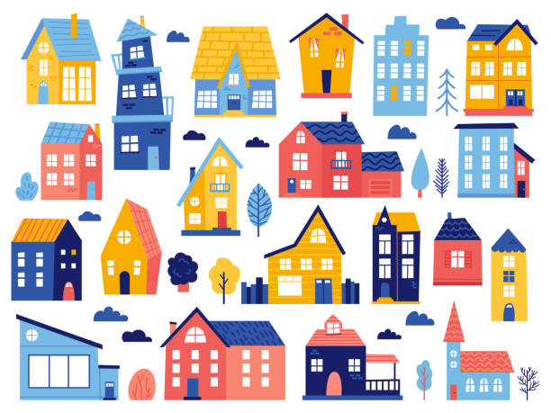
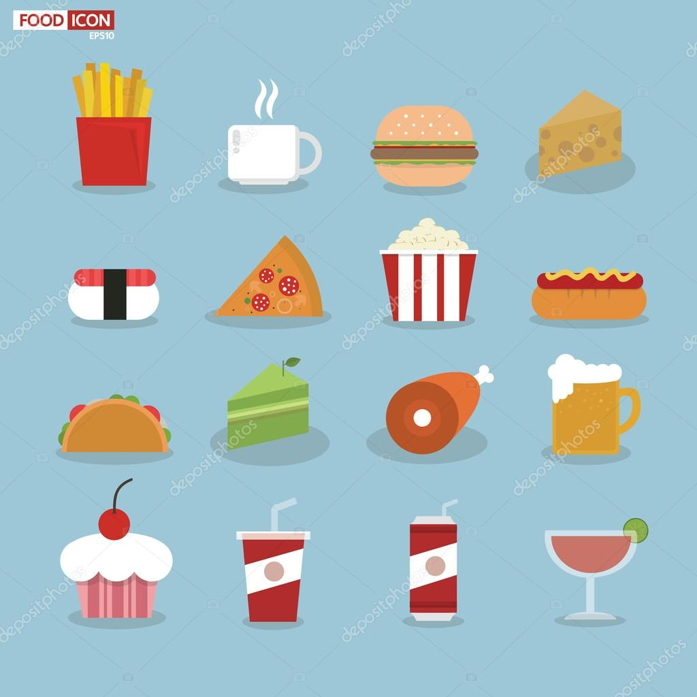
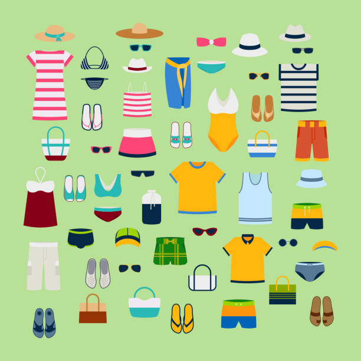
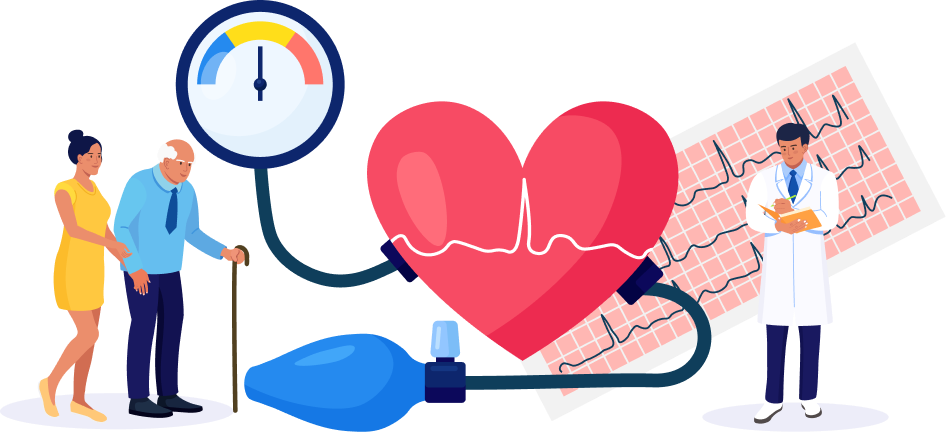
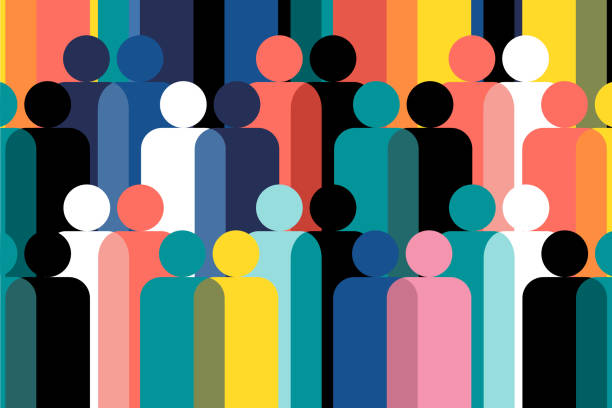
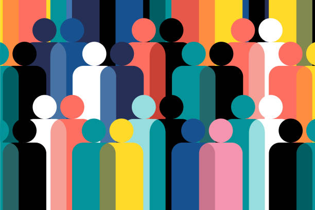

Resources
Resources
Legal Help
Assistance with the asylum process, Access to legal information, Advocacy and representation,
Family reunification, Statelessness, Protection from exploitation
Shelter
Refugee camps, Host families, Transitional housing, Community housing, Social housing,
Self-sufficient housing

Food and water
Emergency food and water, Food assistance, Cash assistance, Food and water distribution,
Agricultural support, Water and sanitation infrastructure...

Clothing
Donations, Clothing distributions, Vouchers, Clothing banks, Sewing workshops, Second-hand Donation, Local clothin Store, Recycled Materials, ...

Medical Care
Medical screenings, Primary healthcare, Mental health services, Emergency care, Health education, Mobile clinics, Faster Access to Medical Resources

Education
Formal education,Non-formal education, Language training, Access to technology,
Educational Support, Listed Education Resources
Language support
Interpreters and translators, Language training, Translation of documents, Multilingual resources, Community interpreters, Third-Party Volunteers, ...
 Community
Cultural Education Programs, Volunteer programs, Housing support, Employment Support,
Mental health support, Community Outreach

Community
Cultural Education Programs, Volunteer programs, Housing support, Employment Support,
Mental health support, Community Outreach
